前言
{% aplayer "天地龙鳞" "王力宏" "/musics/天地龙鳞.mp3" "/musics/天地龙鳞.webp" "" %}
这篇论文介绍的是研三下回家前三次偷跑北京的流水账😎！
正文
4.9 玉渊潭-军事博物馆-中轴北线
06:59 我出发了
成功提交了论文的盲审！获得一段较为宽松的时间。
购买车票 G8812：07:03 保定东-07:42 北京西，￥57。
{kind=link}
这趟车次可以直达大兴机场！因此可作为去北京机场的一个选择方案。
08:01 地铁高峰
{kind=link}
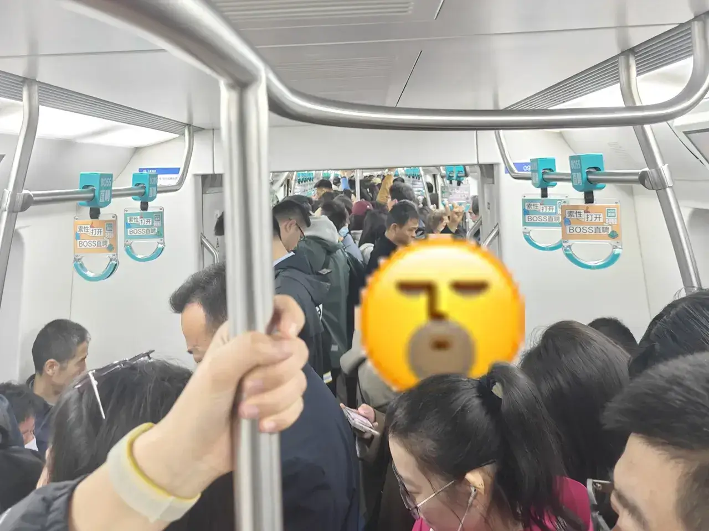
乘坐地铁 9 号线：北京西站-军事博物馆。
刚一下高铁就是急行军般的人群😱。充满班味。
08:07 植发广告
{kind=link}
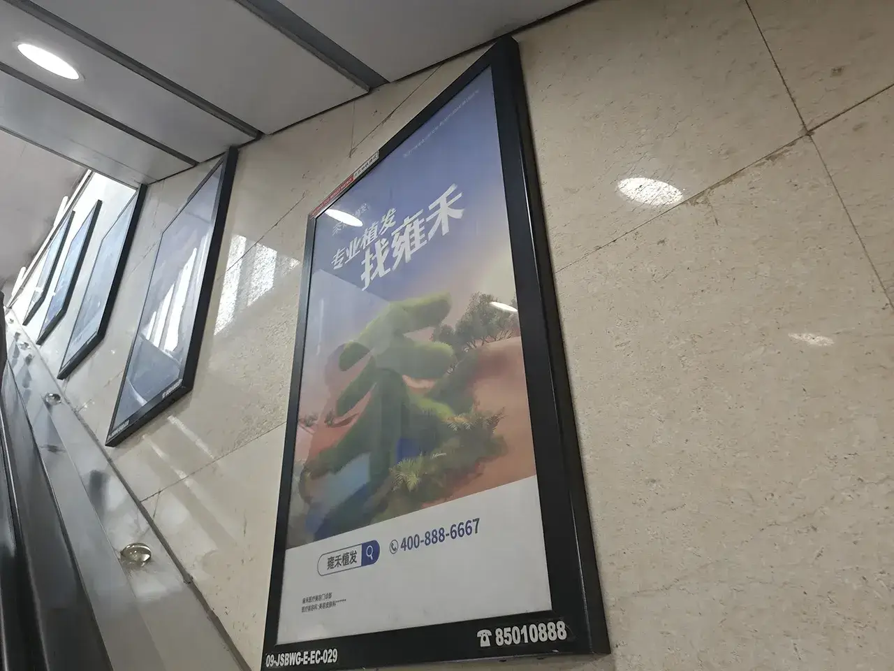
刚一出地铁就是植发的广告😱。说明这个需求市场很大噢！
08:09 中国军博
{kind=link}
军博要 9:00 才会开门，先到旁边的玉渊潭公园转转！
08:10 中央电台
{kind=link}
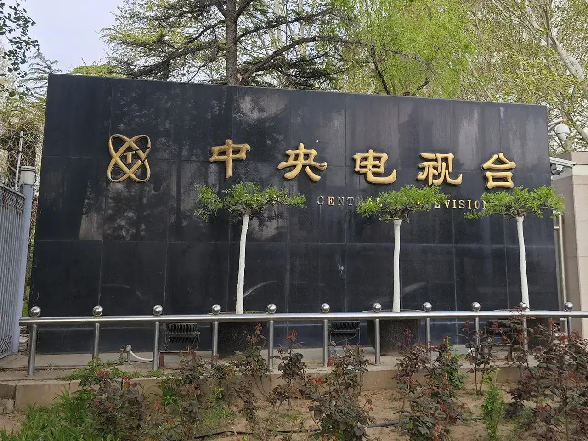
这就是老的中央电视台的办公地点了。
08:13 中世纪坛
{kind=link}
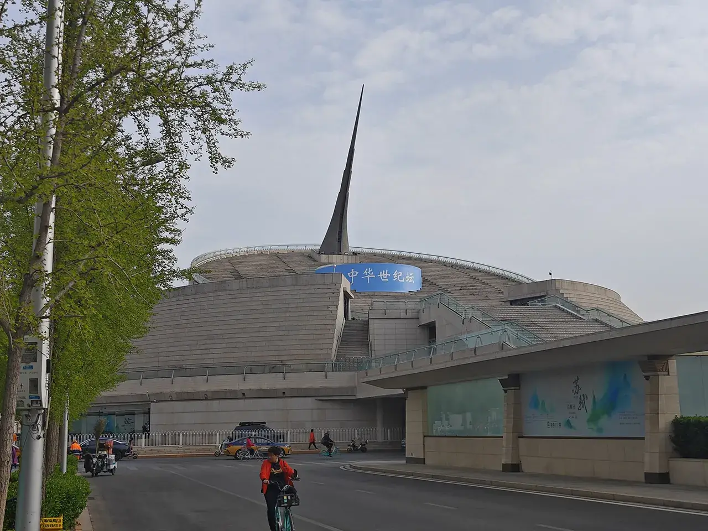
在 MV《北京欢迎你》中，这个日晷出现过。
中华世纪坛，位于北京市海淀区复兴路甲 9 号，是一座日晷形的纪念性建筑。中华世纪坛是为迎接 21 世纪新千年而建。
08:19 玉渊潭园🤩
{kind=link}
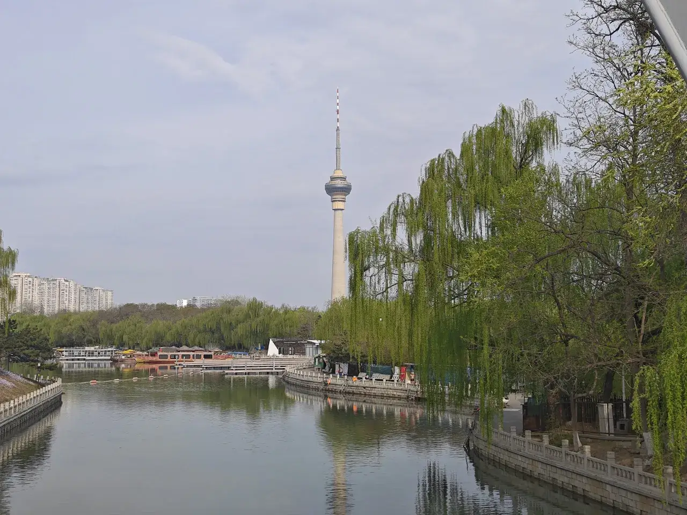
进入玉渊潭公园，￥10。玉渊潭公园以樱花盛开闻名，然而，“人间四月芳菲尽”。现在公园里只剩下些许的晚樱了。
这个电视塔要比天津的矮一些。
08:23 各色植物
{kind=link}
{kind=link}
{kind=link}
{kind=link}
各色植物
08:32 少年英雄
{kind=link}
{kind=link}
中国少年英雄纪念碑
1984 年 7 月 25 日至 8 月 4 日，共青团中央和教育部在北京联合召开了“中国少年先锋队队员和辅导员代表会议”，时任国家主席李先念等领导同志出席了在中南海怀仁堂举行的大会开幕式，邓颖超代表党中央作了题为《未来需要你们去创造》的讲话。会议研究认为，在各个不同的历史时期，儿童组织和广大少年儿童为祖国、为人民做出了巨大的贡献，涌现出了一批少年英雄。为了表彰少年儿童，激励少年儿童，使少年英雄的革命精神发扬光大，永放光芒，会议决定在北京市玉渊潭公园建立“中国少年英雄纪念碑”，1984 年全国少工委 1 号文件发布了此决定。
08:34 健身京爷
{kind=link}
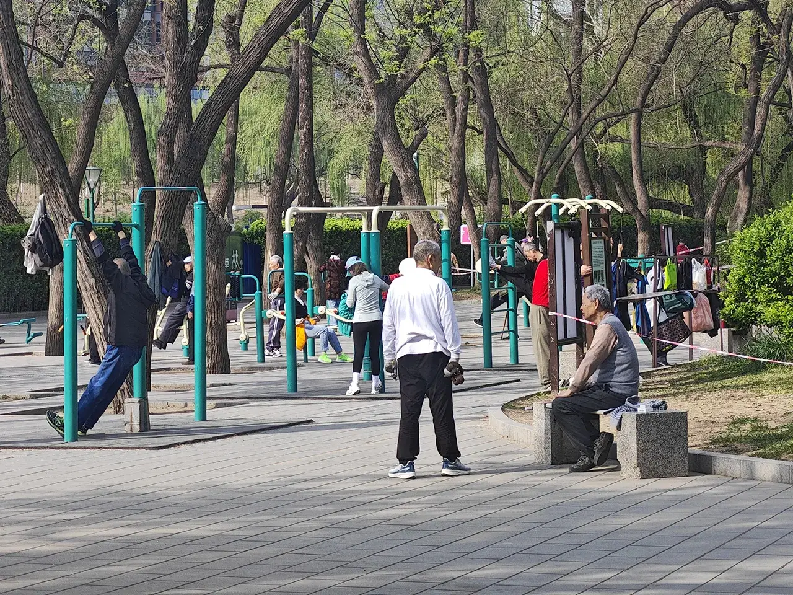
享受晚年生活的北京市民。
08:52 玉渊赏樱
{kind=link}
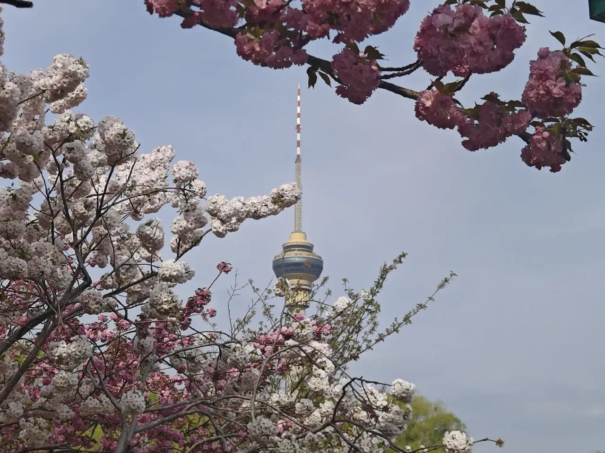
中央电视塔前的一点点晚樱。
使用以下 Chat 老师提供的代码可以给图片添加滤镜效果！
// 获取当前文档
var doc = app.activeDocument;
// Step 1: 复制当前图层作为处理基础
var baseLayer = doc.activeLayer;
var copyLayer = baseLayer.duplicate();
copyLayer.name = "少女感-底图";
// Step 2: 柔焦（模糊 + 柔光）
var softLayer = copyLayer.duplicate();
softLayer.name = "柔焦层";
softLayer.applyGaussianBlur(5);
softLayer.blendMode = BlendMode.SOFTLIGHT;
softLayer.opacity = 60;
// Step 3: 创建粉色叠加图层
var colorLayer = doc.artLayers.add();
colorLayer.name = "粉嫩色调";
colorLayer.blendMode = BlendMode.COLORBLEND; // 修正这里
colorLayer.opacity = 20;
// 用淡粉色填充整张画布
var fillColor = new SolidColor();
fillColor.rgb.red = 255;
fillColor.rgb.green = 200;
fillColor.rgb.blue = 220;
app.foregroundColor = fillColor;
doc.selection.selectAll();
doc.selection.fill(app.foregroundColor);
doc.selection.deselect();
// 提示完成
alert("✨ 少女感滤镜完成！效果：柔焦 + 粉色梦幻叠加");{kind=link}
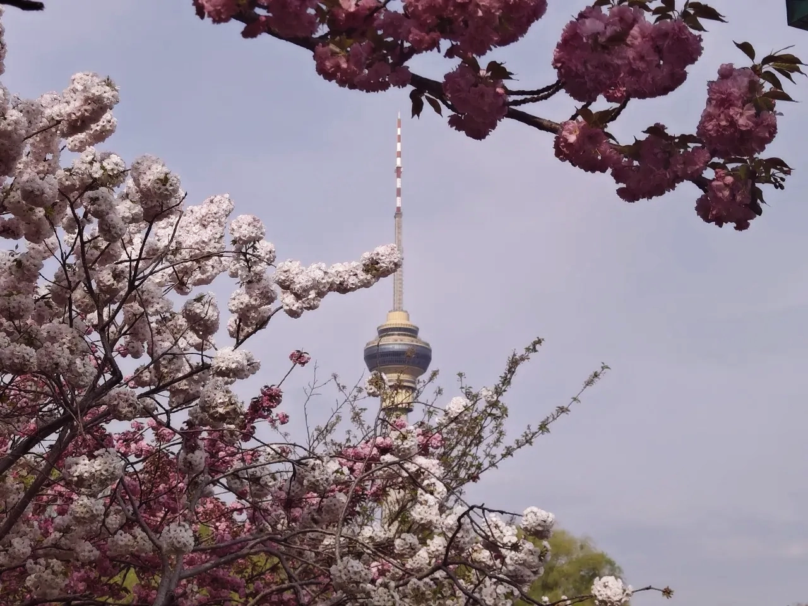
09:27 走进军博🤩
{kind=link}
{kind=link}
{kind=link}
中国人民革命军事博物馆
在玉渊潭公园里买了一份肠粉和烤冷面（好贵啊！）当作在博物馆里解决饥饿的物品了。
这个博物馆热度一直都是北京特别高的那几家，好在这天是个工作日，不用怎么排队。
09:38 伟人雕像
{kind=link}
{kind=link}
军博大厅
09:42 鹰击长空
{kind=link}
{kind=link}
{kind=link}
{kind=link}
肥鸡
很多都是米格-15，还有一些缴获的国军/美军的飞机。
09:58 伟人座驾
{kind=link}
{kind=link}
伟人座驾
分别是斯大林和捷克斯洛伐克总统送给毛主席的座驾。
10:32 炮兵火力
{kind=link}
{kind=link}
{kind=link}
开炮！
10:36 矛盾结合
{kind=link}
{kind=link}
{kind=link}
开炮！
10:50 美侦察机
{kind=link}
{kind=link}
U2
美帝国主义侵犯中国主权！中国必击而破之😡！
美国造 U-2 高空侦察机残骸
U-2 高空侦察机是 20 世纪 50 年代美国洛克希德公司研制的高空战略侦察机，1955 年 8 月首飞，1956 年 5 月装备。 为使用 U-2 高空侦察机侦察大陆，台湾国民党空军于 1960 年 11 月专门成立了第 35 中队，俗称“黑猫中队”。1962 年 1 月，U-2 高空侦察机开始对大陆进行侦察，人民空军针锋相对地展开反侦察斗争。9 月 9 日，空军地空导弹部队在南昌市郊首次击落 1 架 U-2 高空侦察机。至 1967 年 9 月，共击落 5 架该型侦察机。这架飞机残骸是由 4 架飞机残骸拼成的，主体为第 4 架。
11:07 火铳铁炮
{kind=link}
{kind=link}
{kind=link}
{kind=link}
{kind=link}
{kind=link}
火铳铁炮
二楼的长廊都是些枪械了。
11:22 渡江战役
{kind=link}
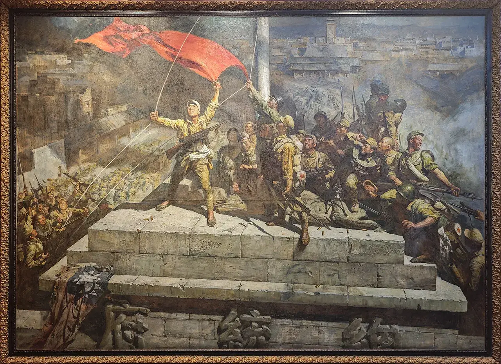
之后是一些描绘人民解放军故事的画作展览。
BB 说这是他见过的画得最好的一幅油画了。
11:31 人民万岁
{kind=link}
{kind=link}
人民万岁
一些雕塑，我一个外行也觉得描绘得挺有感染力。但是篇幅受限，就不把照片都放出来了🤧。
11:38 抗美援朝
{kind=link}
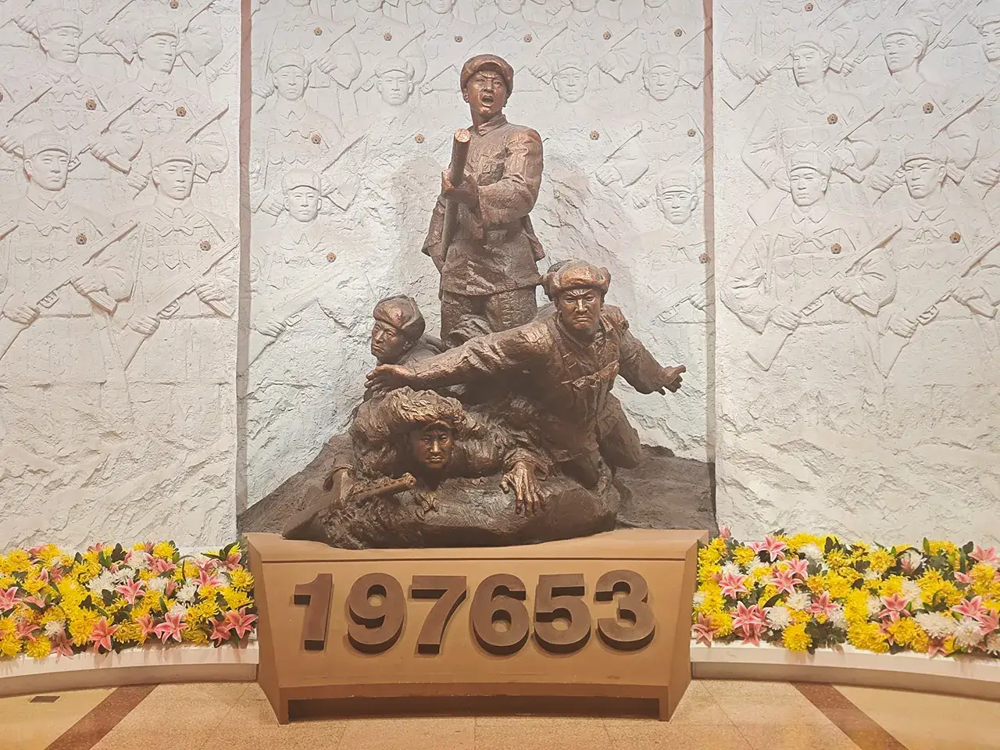
目前官方认为，于抗美援朝战役阵亡的志愿军数量为 197653 位。
11:44 中国军魂
{kind=link}
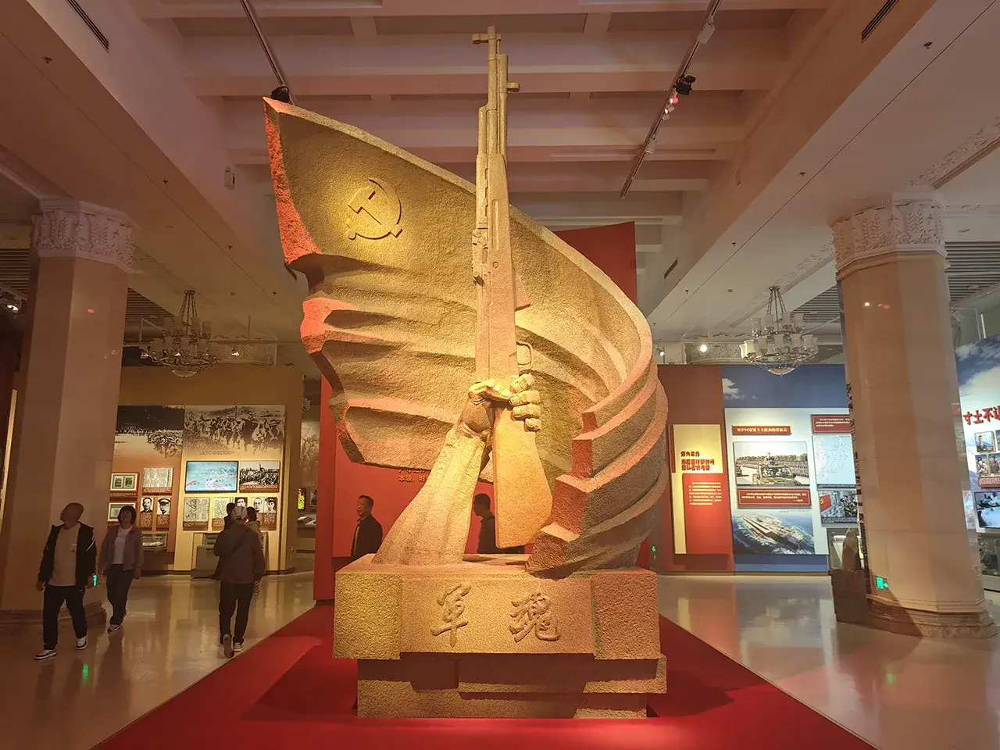
12:29 积水潭站
{kind=link}
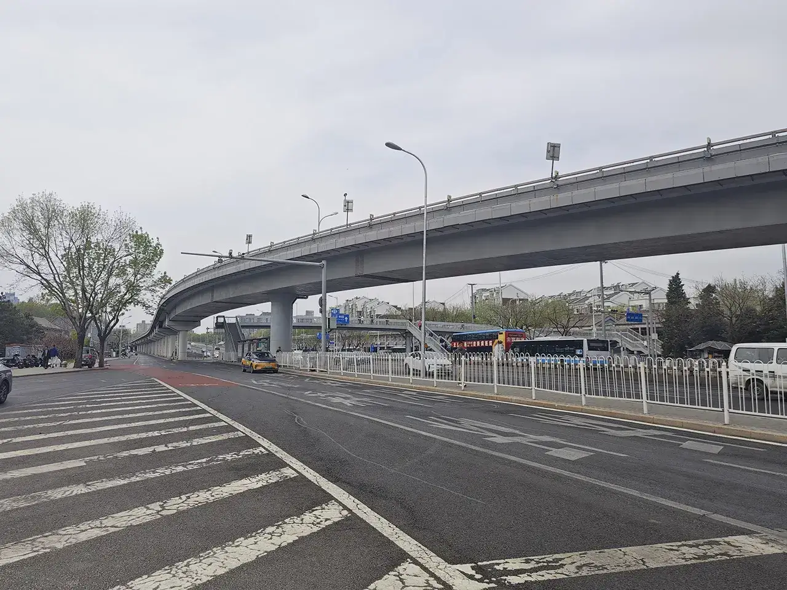
本来是想再逛逛首都博物馆的，但是想到人有些疲倦，再看一些高密度的景点注意力会有些跟不上，遂决定从德胜门走去钟鼓楼逛逛！
12:33 公交车站
{kind=link}
这个地方五年前去八达岭长城的时候还有印象。
12:34 旗开得胜
{kind=link}
{kind=link}
德胜门
八国联军侵华战争的时候，慈禧太后带着光绪帝跑路的地方。
12:38 八七二路
{kind=link}
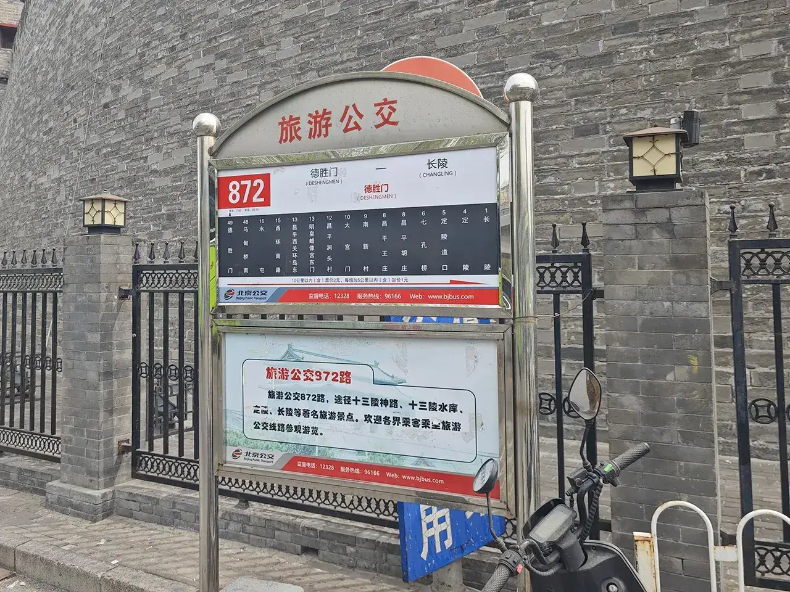
查了一下 872 路好像不再从德胜门发车了，要去明十三陵的话得从马甸桥南站出发。
13:03 三海大河🤩
{kind=link}
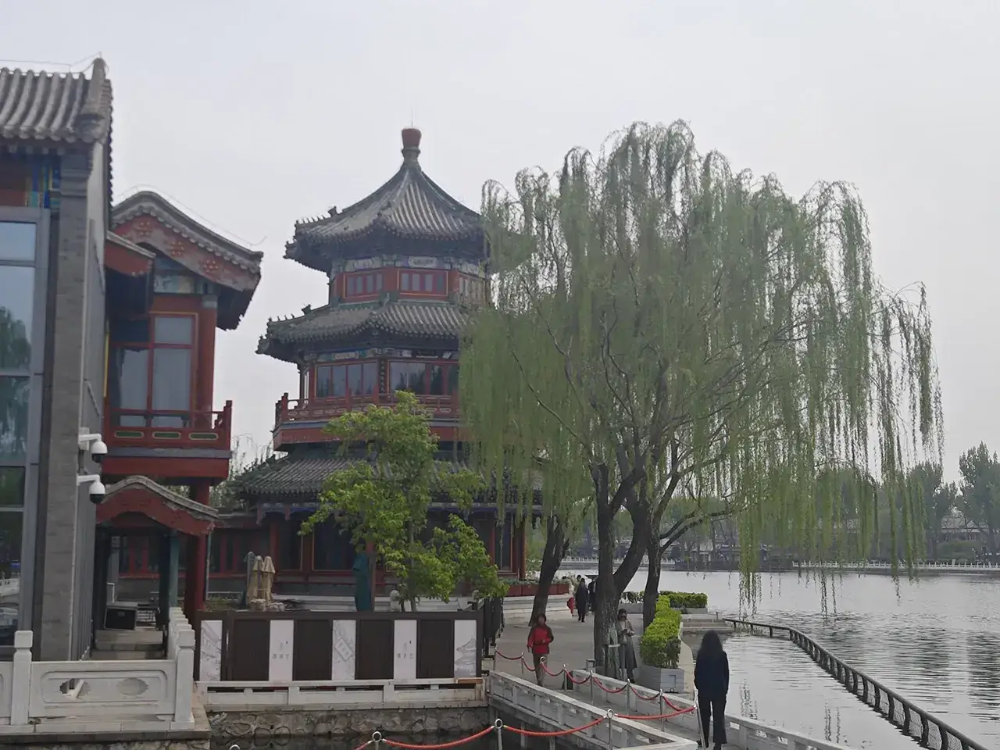
前往鼓楼的过程去一下什刹海吧！虽然已经来过了。
{kind=link}
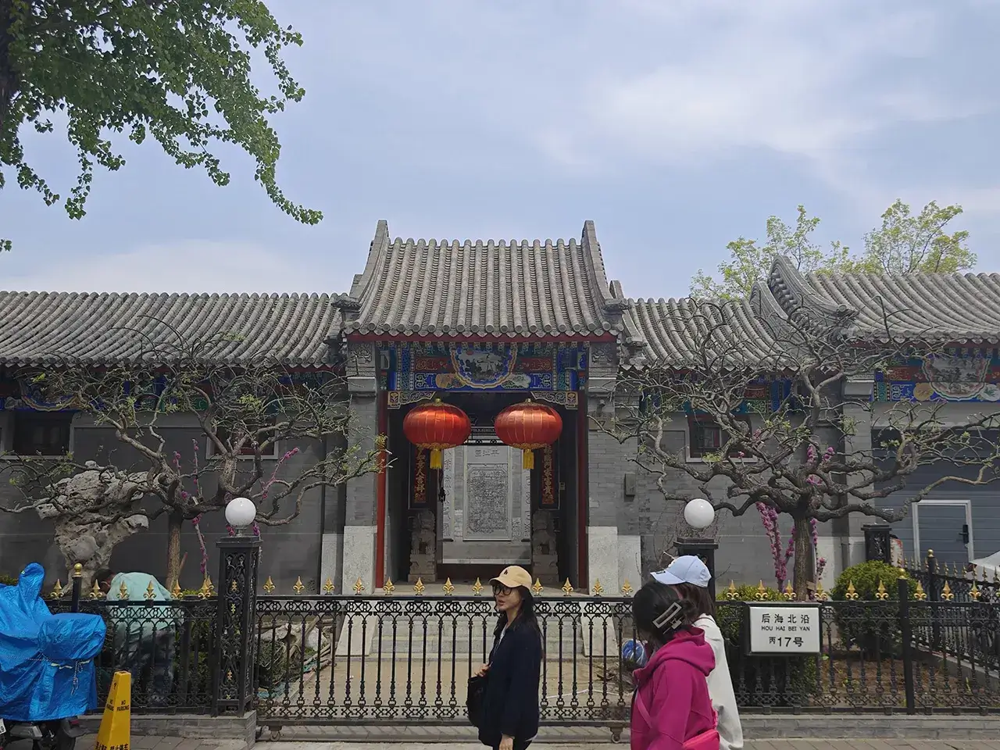
终于，我开始对老北京四合院的样式感到了厌倦。
{kind=link}
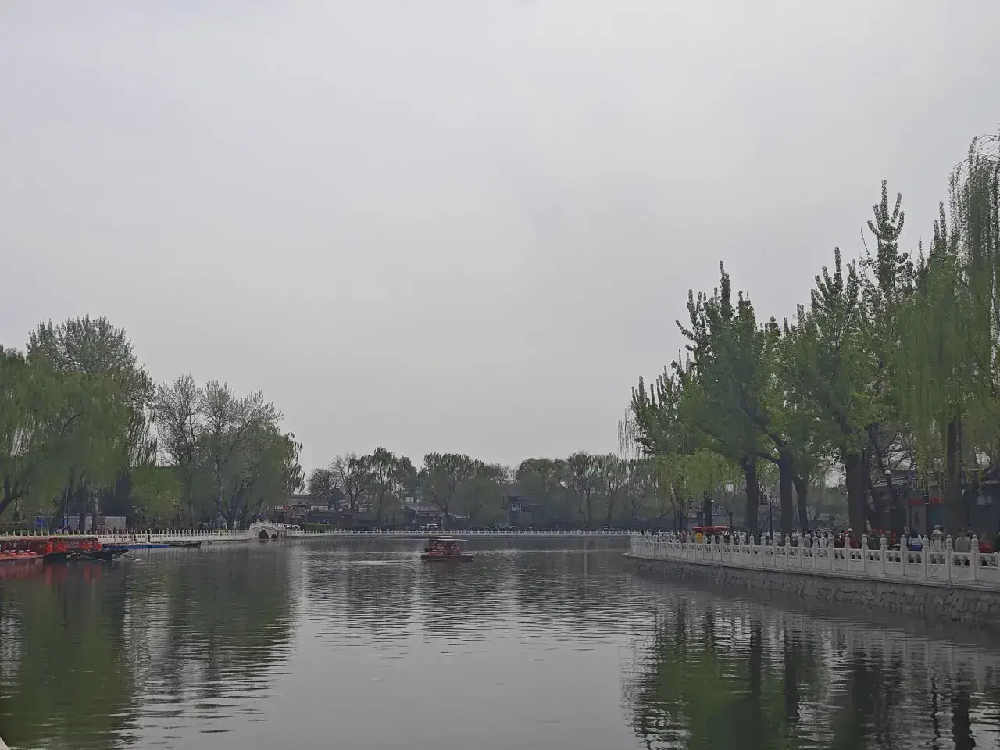
跟五年前一样，有着拉黄包车的人。从旁边听感觉他们的介绍的说辞都是背好的🤔。走到最后时，会听到拉车的人说“祝您在北京的旅途愉快”。
13:26 烟斜袋巷
{kind=link}
买个纪念币，撤！
13:28 中轴北区
{kind=link}
{kind=link}
钟楼鼓楼
这龙鳞却曾经~铿锵落地犹如碎冰~
14:32 北京西站
{kind=link}
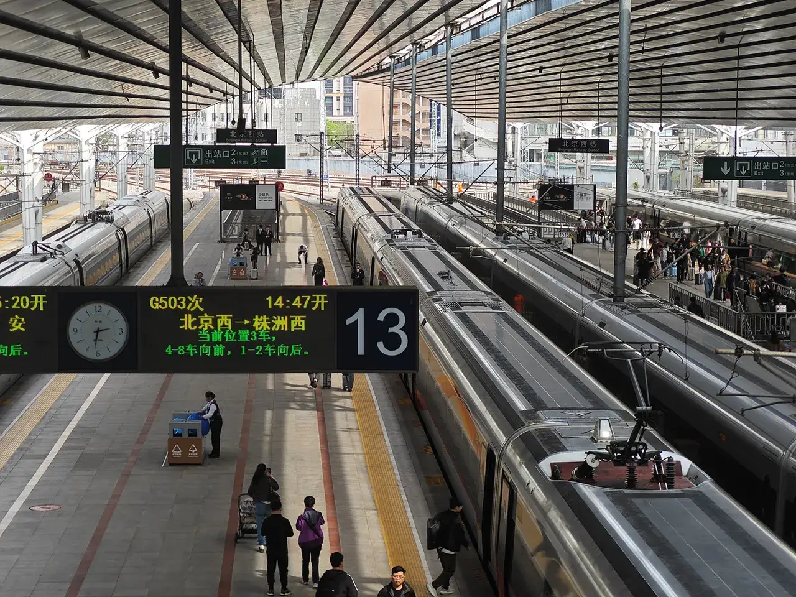
走不动了😭，改签，撤！
是抢铁 U 彩的车😭！G503 14:47 北京西-15:28 保定东，￥70。
15:27 京畿之门
{kind=link}
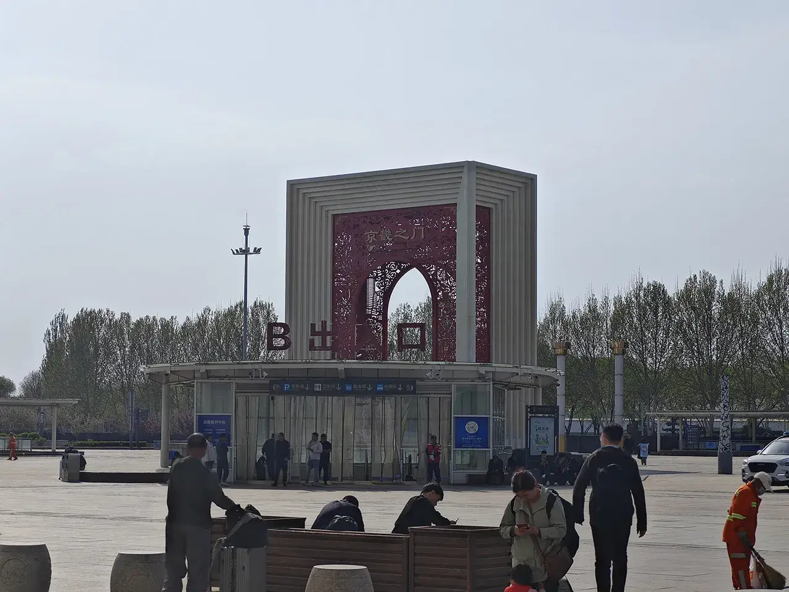
回去洗澡开躺！
4.15 动物园-自然博物馆-中轴南线
06:14 七一东路
{kind=link}
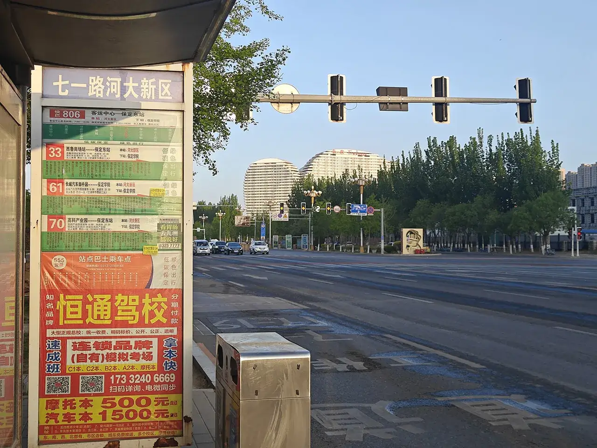
我再去玩一次😍！这回是去北京看动物主题！
06:52 六七零八
{kind=link}
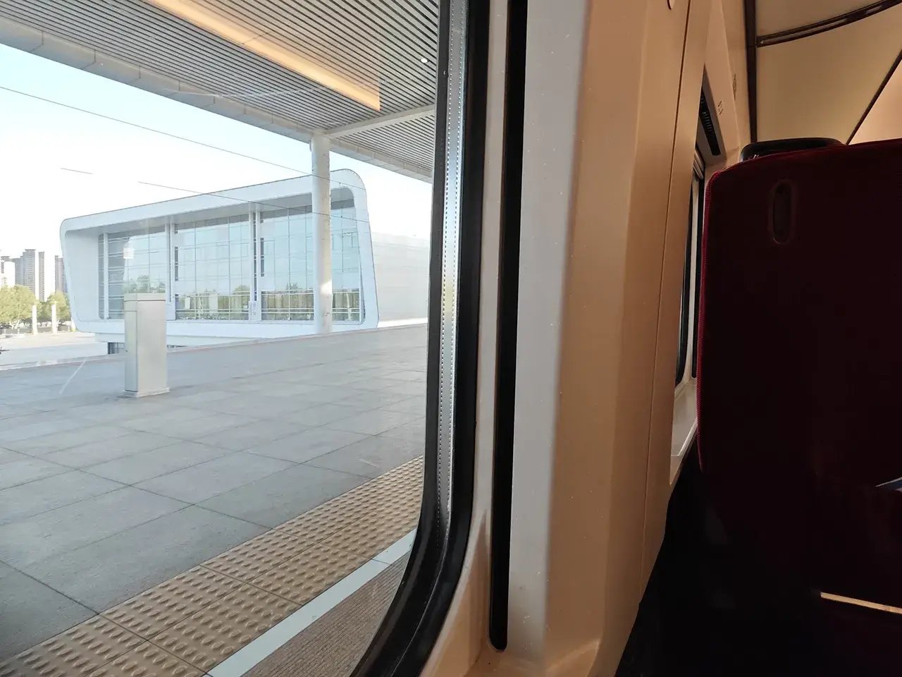
非常不幸运的没有买到去北京西的票，而且去丰台的也没有二等座，只能被迫坐（低人）一等座了😭。
06:53 保定东-07:46 北京丰台，￥87。
07:42 车水马龙
{kind=link}
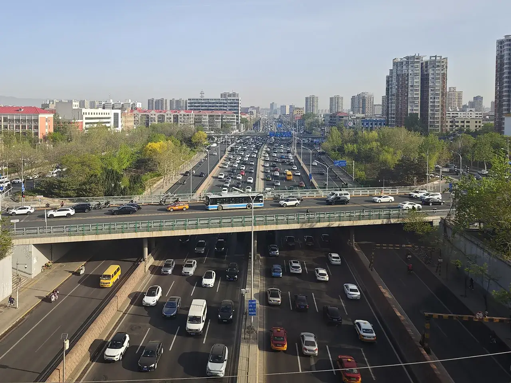
该去上班咯😭！
07:47 北京丰台
{kind=link}
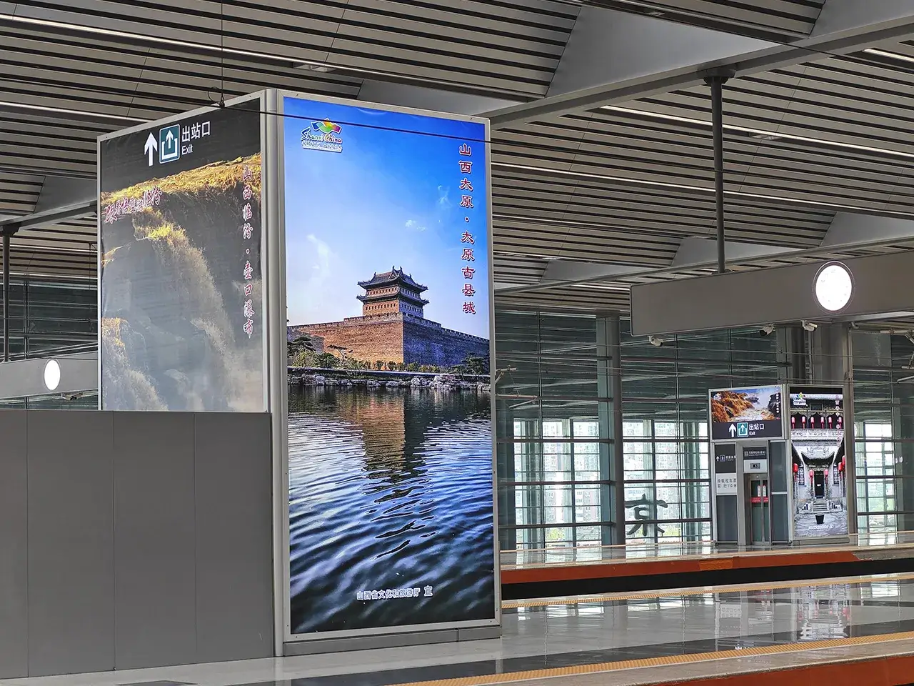
没有应舍友的邀请来到了山西，但是一下车还是看到了山西的宣传图😭。
08:42 农试验场🤩
{kind=link}
{kind=link}
清农试验场
北京动物园始建于 1906 年，在西直门外乐善园、继园和广善寺、惠安寺“两园、两寺”旧址上的清“农事试验场”内，由商部奉旨筹建。园内由动物园、植物园、农事试验三部分组成。最早的动物园位于园内东侧，占地 1.5 公顷，是中国对公众开放最早的动物园和华北地区对公众开放最早的公园。据考此地也是中国现代动物园、植物园、博物馆的发祥地。
本来从丰台站到动物园的最佳路线是 10 号线-六里桥-9 号线-国家图书馆-北京动物园，但是下高铁后瞎走走到了 16 号线里面去，只好再倒腾一下公交去动物园了。
购买动物园联票￥19。
08:46 正楼侧楼
{kind=link}
{kind=link}
{kind=link}
{kind=link}
正楼和侧楼
正楼及侧楼位于大门内，傅佰锐设计，二层砖木结构，折中主义形式，木外廊铁皮顶。
河北保定只有 4 只熊猫，而河北北平有 11 只熊猫😍（但是只展示 9 只），所以先去看熊猫！
08:53 国宝熊猫
{kind=link}
{kind=link}
{kind=link}
{kind=link}
{kind=link}
{kind=link}
国宝熊猫
熊猫馆只能使用联票/熊猫馆票才能进去，分为亚运馆和奥运馆。
{kind=link}
奥运馆有一个熊猫特别受欢迎，有很多发烧友跟急行军似的冲到有利位置去拍照🤧。查了一下这只熊猫叫萌兰，估计是比较有活吧。
09:18 猴哥猴哥
{kind=link}
{kind=link}
{kind=link}
{kind=link}
猴哥猴哥
你真了不得！
09:20 一屠晚归
{kind=link}
由于前段时间河北刚有个小地震，看到狼一直走来走去像是焦虑不安的样子，就怀疑是不是又是个地震的征兆，好吧可能它平常就这样🤧。
而且它还很臭。
09:33 熊心豹胆
{kind=link}
北极熊只能在很远很远的地方看到，估计是它只能在低温环境下生活吧。
{kind=link}
{kind=link}
薮猫
我忘记这只动物叫啥了，Chat 老师说这是薮猫。
09:40 古木化石
{kind=link}
09:42 百兽之王
{kind=link}
{kind=link}
{kind=link}
{kind=link}
{kind=link}
{kind=link}
狮虎山
然后就是动物园里最没意思还每次都想去看看的动物——睡大觉的狮子老虎了。狮子还能看到在睡大觉，老虎估计直接回洞里去了。
我觉得这个石雕都比动物精彩😇。
09:58 鹈鹕灌顶
{kind=link}
10:02 黑白毡貘
{kind=link}
{kind=link}
马来貘
马来貘！从来没见过哦。跟熊猫一个配色主题。
10:09 伟人坐骑
{kind=link}
毛泽东及中共中央进驻延安以后，当时的交通方式除了徒步以外，就是骑马。1947 年 3 月 18 日到 1948 年 3 月 23 日，毛泽东率领中央机关转战陕北 371 天，行程 1000 多公里，所骑乘战马是一匹菊花长棕青马。
新中国成立后，1952 年 10 月经中共中央办公厅批准，将毛泽东、朱德、任弼时骑乘的战马，迁入北京动物园（当时的西郊公园）草原动物苑内饲养展览。1962 年 7 月 30 日，花长棕青马年老去世。1963 年，北京动物园将其制成标本留存，并于 1964 年 8 月 14 日将该标本及所属鞍送交延安革命纪念馆，作为国家一级文物展出。
10:12 雄鹰展翅
{kind=link}
{kind=link}
鹰山
10:19 南越大兽
{kind=link}
{kind=link}
{kind=link}
{kind=link}
象
这个动物也臭臭噢🫢！
10:26 海洋世界
{kind=link}
{kind=link}
海洋馆雕塑
进入海洋馆需要￥120，因为我已经去过类似的了就下次一定！
10:31 御河游船
{kind=link}
{kind=link}
{kind=link}
皇家御河！
可以走老佛爷当年去颐和园的游船路线，需要￥120，下次一定！
10:33 植食动物
{kind=link}
{kind=link}
{kind=link}
{kind=link}
植食性动物
动物园西区的各种动物。
乌鸦停在牛牛身上，牛牛也不管。
11:13 飞禽水禽
{kind=link}
{kind=link}
{kind=link}
飞禽水禽
11:28 京天文馆
{kind=link}
撤！想着来北京了就得吃吃在福州吃不到的东西，于是我选择了去西单大悦城吃萨莉亚。动物园站-4 号线-西单站。
在车上 HR 跟我说面试通过啦😍！但是环境有些嘈杂不太好联系，就跟他约了下午 14:00 电话。
12:11 意式餐厅
{kind=link}
{kind=link}
{kind=link}
意式沙县
属实是有点饿了，多点了些东西。蔬菜汤+沙拉+烤鱼排，￥43。
13:05 一零五路
{kind=link}
{kind=link}
{kind=link}
西洋建筑
想在路上看看风景，就选择了公交而不是地铁，西单商场站-105 路-天桥站，￥2。
13:30 国自然馆🤩
{kind=link}
就是这里了！攻进去！
结果刚进去不久 HR 就跟我说能否现在联系，说了下薪资福利（令人震惊！），但他们之前说过工作时间是 10106（令人震惊！），还是令我感到害怕，不过至少让我证明了我还是有能力靠自己获得一份高薪的 offer 的😇。啊，北京！既是吸引游客的圣地，又是牛马们打拼的苦逼地方😭。
后面跟好几个同学交流了下最后还是放弃了这个 offer，我喜欢在北京玩不喜欢在北京工作😭。
13:45 生物化石
{kind=link}
{kind=link}
{kind=link}
{kind=link}
{kind=link}
{kind=link}
{kind=link}
💀
因为第一次拿到 offer，就很兴奋，展馆里的东西就没咋看，不过我感觉这个展馆有点小，估计是历史有些久远了😇。
14:14 植物标本
{kind=link}
{kind=link}
🍃
14:19 动物标本
{kind=link}
{kind=link}
{kind=link}
{kind=link}
{kind=link}
{kind=link}
{kind=link}
{kind=link}
{kind=link}
{kind=link}
{kind=link}
{kind=link}
{kind=link}
🐅
只有在标本馆里的狮子老虎才不会睡觉！
14:29 人类奥秘
{kind=link}
{kind=link}
{kind=link}
{kind=link}
👴
14:46 海洋世界
{kind=link}
{kind=link}
{kind=link}
{kind=link}
🐟
国家自然博物馆的免费水族馆！不去海洋馆立省￥120。
15:24 中轴南线🤩
{kind=link}
寻思着精力还不错，就改签了高铁，骑个共享单车再逛一会儿。这天走的是北京中轴线南半部分。
15:33 永定大门
{kind=link}
抵达老北京城南边界！
15:47 珠市口堂
{kind=link}
珠市口教堂是美以美会（卫理公会）在北京创设的一座基督教堂，也是北京目前仍在使用中的几座基督教堂之一。
珠市口堂位于东城区前门大街 129 号，即广安大街和前门大街两条繁华路段的交汇处。这座教堂始建于 1904 年，是 1900 年以后卫理公会在北京南城新建的 8 座教堂中的第一座。1923 年建成。该堂具有简易哥特式风格外貌。
15:49 前门大街
{kind=link}
过了珠市口大街就是前门大街！
{kind=link}
{kind=link}
{kind=link}
{kind=link}
卖东西的
想着又要马上回家了就带点伴手礼给老同志们，就买了两包京八件，￥100。后来得到反馈吃几口就没了😡，还不如上海蝴蝶酥呢。
16:18 正阳大门
{kind=link}
{kind=link}
{kind=link}
{kind=link}
{kind=link}
{kind=link}
进入前门！
过了正阳门就是老北京的内城了。在远远地望见天安门的一角后，我决定结束本次行程！
16:54 北京西站
{kind=link}
G527：17:20 北京西-18:01 保定东，￥63。
18:03 保定东站
{kind=link}
18:40 未来像素
{kind=link}
在这天获得 offer 的同时，舍友也受到了在北京 offer 的好消息！于是他决定请我们吃个饭。
4.18 大兴国际机场
06:29 又要走了
要走了！京爷沪爷不如回去当闽爷😎！
购买机票 MF8816：11:55 北京大兴-15:00 福州长乐，￥824（这个价格已经是从北京飞算便宜的了😭）。
{kind=link}
购买车票 G8812/G8813（进京方向为偶数，离京为奇数）：07:03 保定东-08:38 大兴机场，￥75（坐一个半小时居然这么便宜）。经过改线，河北保定终于可以坐高铁直达大兴机场了😭，尽管还是必须走一个先进京再出京的绕路路线。
07:51 北京西站
{kind=link}
到了西站，下来一拨人，看着都是苦逼的河北社畜😭。月薪几万就是这么来的。大北京也是靠这么多税收盖起来的。
08:37 机场高铁🤩
{kind=link}
大兴机场线有很多车次通往雄安，在雄安站离开发区还这么远的目前，是不是有些浪费？
09:04 睡眠仓库
{kind=link}
查了下得￥30/h，真要过夜还是睡躺椅吧😭。
09:05 世界第一
{kind=link}
作为世界第一大的航站楼，我们中国真是太厉害了😭！
09:08 北京中轴
{kind=link}
这个机场作为中国的门面之一（被誉为了“新国门”！），还是一个值得玩味的地方，五年前没好好逛过的现在一定要好好逛逛😍！
{kind=link}
将首都建成中轴之势，自曹操兴建邺城变开始由来。
{kind=link}
北京中轴线（116.23°E）上有着许多标志性建筑，左右两边摆着它们的模型，我居然老瞎眼了回去了才看到😭！
{kind=link}
在大兴机场航站楼的正中心，挂着一面鲜艳的五星红旗。
下面摆着老北京永定门牌匾（假）。
{kind=link}
{kind=link}
{kind=link}
{kind=link}
{kind=link}
{kind=link}
{kind=link}
{kind=link}
{kind=link}
{kind=link}
这京畿中轴地 一如君子气节不移
恭喜！我成功参观过了中轴线上的所有地点！成为了一个老北京！这辈子有了😭！
10:00 凤凰展翅
{kind=link}
看了小红书，从老舍茶馆里点了一份“杏仁豆腐牛乳茶”，味道还行，贵的一比￥26。
接下来参观了一个介绍机场建设的展厅，除了前面如何选址，以及盖完后获得了一堆奖以外（不感兴趣），本理科生还是对中间提到的一个机场设计的拓扑结构让航站楼到登机厅的平均距离最短感兴趣（自航站楼中心到达任何指廊端不超过 600 米）😇。
航站楼五指廊的指端分别建造了丝园、茶园、瓷园、田园、中国园 5 座“空中花园”，集中阐释和表达中国优秀传统文化的精髓。
还说了下机场的五个角的尽头都有一个空中花园，我必逛。
之后就要安检了，太严了😭居然还要脱鞋。
10:20 空中花园
{kind=link}
{kind=link}
{kind=link}
{kind=link}
{kind=link}
{kind=link}
空中花园
北京大兴机场优秀的拓扑结构自航站楼中心到达任何指廊端不超过 600 米！但是对于我这个像把 5 个空中花园都走遍的无聊人士来说，这得让我走更多的路程😭！
后面发现居然漏走一个中国园，太老瞎眼了😭！！！
中间被一个问路大妈认成小姑娘了😭！
11:09 预制菜馆
{kind=link}
看小红书说来大兴机场得吃 B 区的阳阳中国饭，于是点了份冰糖荷叶粥+拍黄瓜+虾仁烧卖，拍黄瓜连塑料袋子都没撕，把预制菜写脸上不演了😭。其它味道也一般，而且感觉时间快到登机了就胡乱地吃完走了。
11:21 群雁辞归
{kind=link}
13:24 安徽安庆
{kind=link}
飞机上看到一条很宽的江，时间也对的上，我猜是长江。地图上比一下觉得是安庆。
{kind=link}
{kind=link}